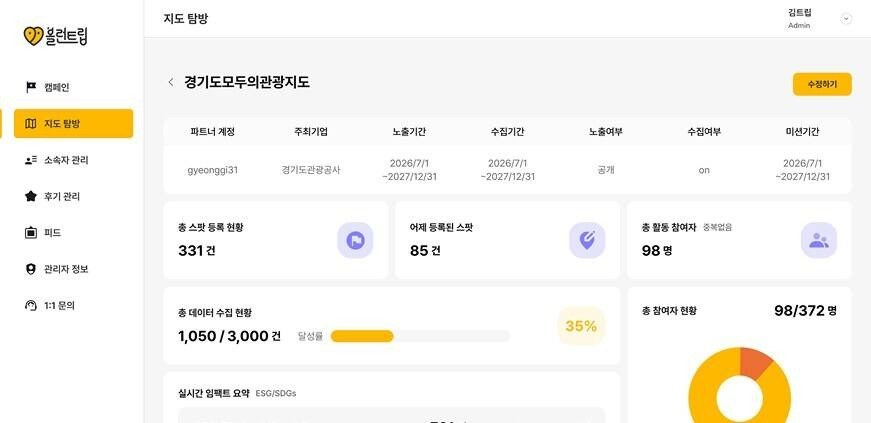
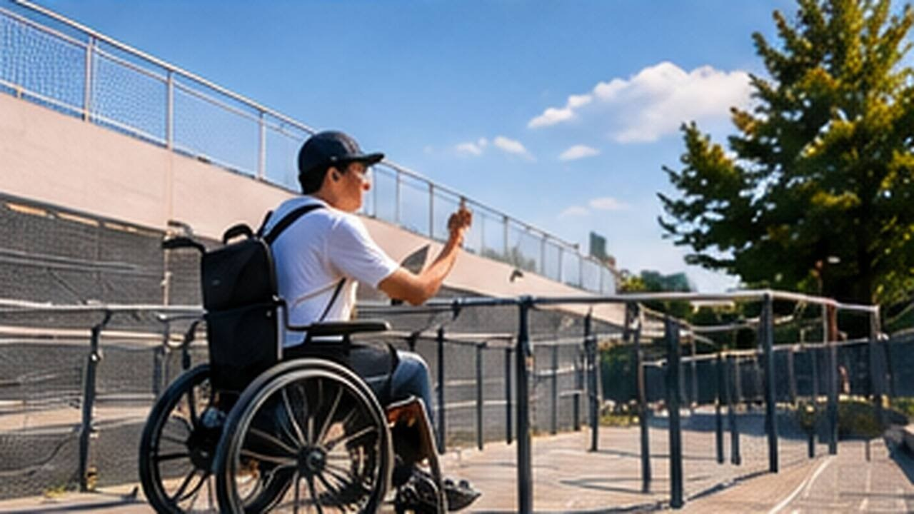
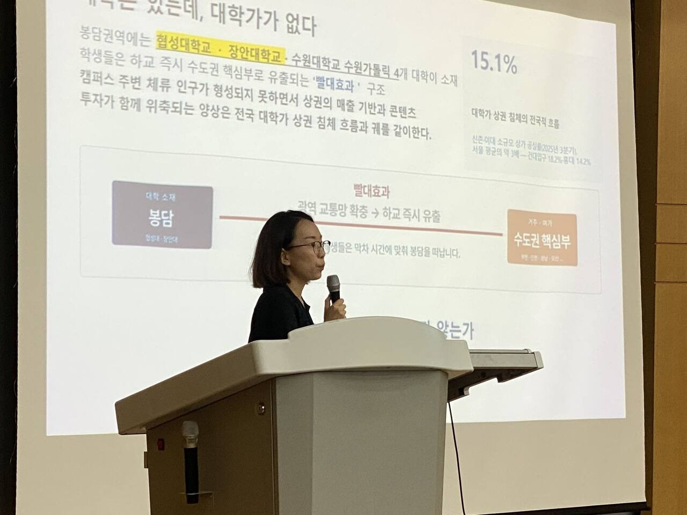
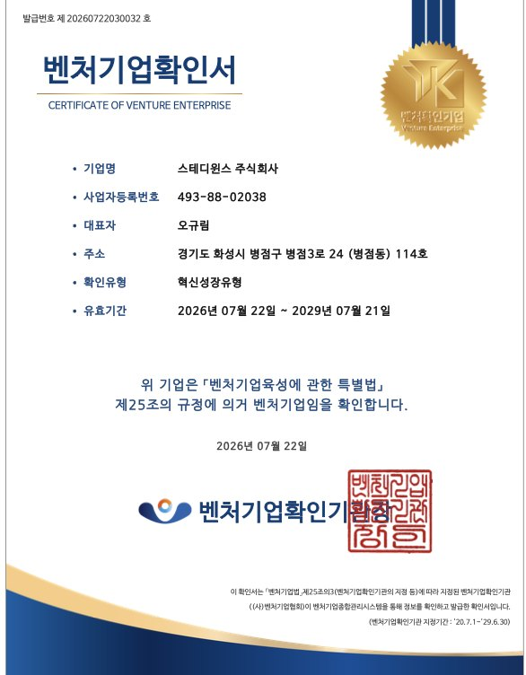
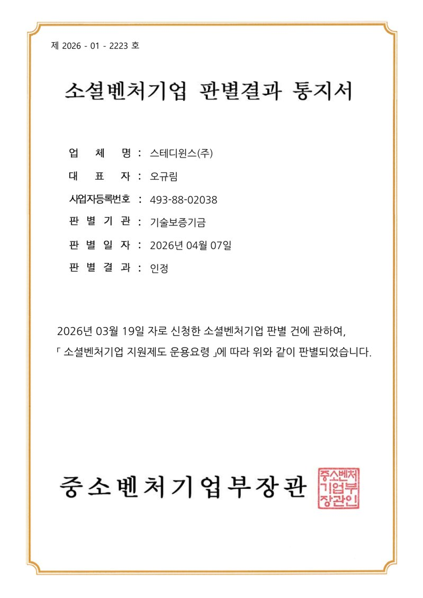
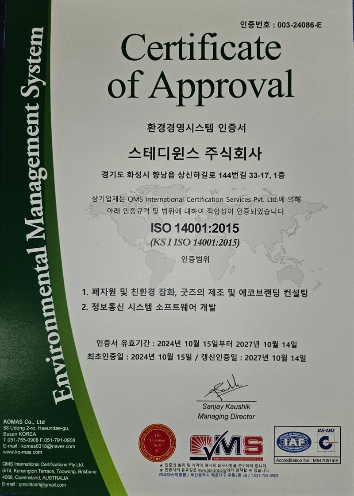

회사소개서
회사소개서2027
지역의 문제를,
시민의 참여로.
지역문제 해결 프로젝트 · ESG 참여 플랫폼 전문기업
스테디윈스는 지역의 문제를 발견하고, 시민과 기관이 함께 해결하는 프로젝트를 기획하고 실행합니다.
Leave it better.
스테디윈스 주식회사
STEADYWINS Inc.
회사소개서지역문제 해결 프로젝트 · ESG 참여 플랫폼 전문기업
스테디윈스는 지역의 문제를 발견하고, 시민과 기관이 함께 해결하는 프로젝트를 기획하고 실행합니다.
Leave it better.
스테디윈스 주식회사
STEADYWINS Inc.
회사소개서 2027재밌는 도시, 따뜻한 사회, 차가운 지구 만들기.
문제가 실제로 바뀐 곳에는 언제나 시민이 있었습니다.
동네의 문제는 대개 작습니다. 작아서 미뤄지고, 미뤄진 문제는 모여서 큰 비용이 됩니다. 해마다 많은 예산이 쓰이지만, 행사가 끝나면 다시 제자리로 돌아오는 모습을 여러 번 보았습니다.
스테디윈스는 누구나 자기 동네의 변화에 참여할 수 있는 자리를 만들고, 그 참여를 기록으로 남깁니다. 착한 일에서 멈추지 않고 오래가는 방식을 만들겠습니다.
스테디윈스 주식회사 대표 오규림

시민과 학생이 지역의 문제를 직접 조사하고 기록합니다. 결과는 연구와 행정 제안의 자료가 됩니다.
사례봉담권역 대학가 리빙랩, 백석대학교 지역조사 리빙랩
 시안용 사진
시안용 사진지역의 생태·환경·사회 문제를 주제로, 참여자의 경험을 지역 이해와 행동으로 잇는 여행을 만듭니다.
사례경기도 모두의여행지도, 생물다양성 탐조여행

시민과 임직원은 앱으로 참여하고, 기관은 활동과 성과를 관리자 화면과 보고서로 관리합니다.
사례화성시 에코플로깅, 경기도여성가족재단 임직원 ESG

참여 활동에서 모은 데이터로 지역의 이슈를 읽습니다. 진단과 AI 기능은 개발 중입니다.
분야참여형 데이터 수집, 지역 이슈 진단
회사소개서 2027참여부터 성과 데이터까지, 스테디윈스가 직접 개발해 운영합니다.
참여를 실제 행동과 데이터로 잇습니다.


캠페인별 참여 현황과 달성률을 바로 확인하고, 참여자와 리워드를 관리합니다.
경영평가, GRI, SDGs 항목에 맞춰 결과와 증빙 자료를 정리합니다.
회사소개서 2027볼런트립 관리자 집계. 2025년 7월 20일(앱 출시일)부터 2026년 11월 10일까지. 공공기관 7곳에서 운영 중입니다.

시안용 사진시민이 관광지의 경사로와 화장실 같은 무장애 시설을 찍어 제보합니다. 경기도 31개 시·군의 관광지가 참여합니다.
화성호 횡단 10km 구간을 상시 플로깅 코스로 만들었습니다. 2024년 5월부터 운영하며 봉사시간으로 인정받습니다.

학생과 지역 상인의 생활 경험을 조사해 지역 변화의 출발점을 찾고, 최종 연구보고서를 제출했습니다.
회사소개서 2027



그 밖의 자격기업부설연구소 인정(2026.10) · 1365 자원봉사 활동처 인증 · 경기도 AI 멤버십 기업 · 특허 출원 1건
전화 [대표전화 확인 필요]
partner@steadywins.kr
steadywins.kr

우리가 살고 싶은
재밌는 도시, 따뜻한 사회, 차가운 지구 만들기.
Leave it better.